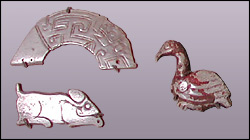

Erlitou
Settlements at Erlitou date from the Neolithic period. An important city was located here during the Shang dynasty. Archaeologists have found many different types of bronze vessels and objects made of jade at the site.

Jade ornaments |